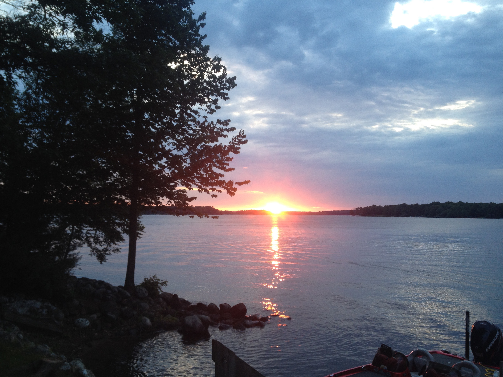
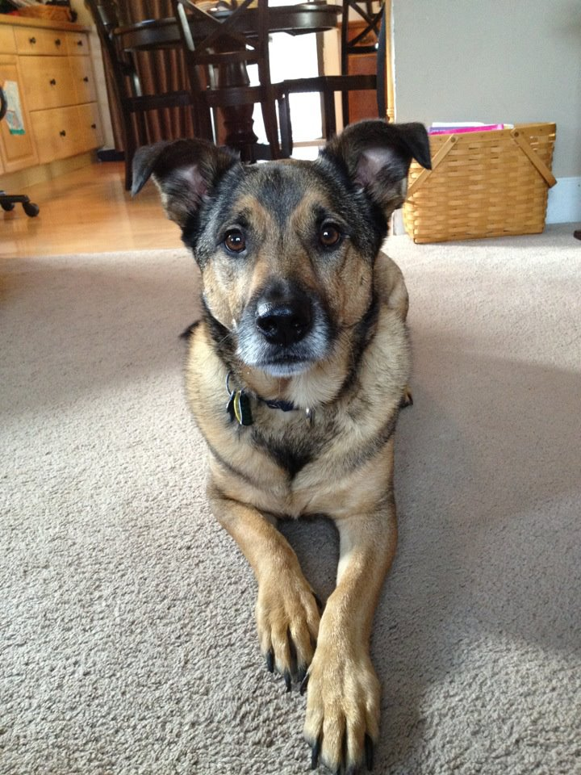
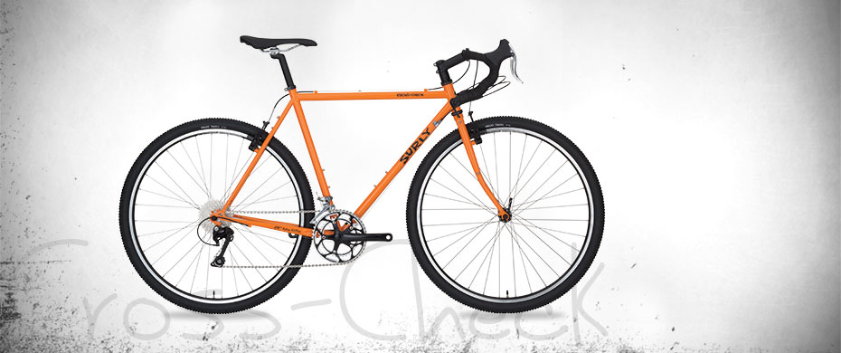
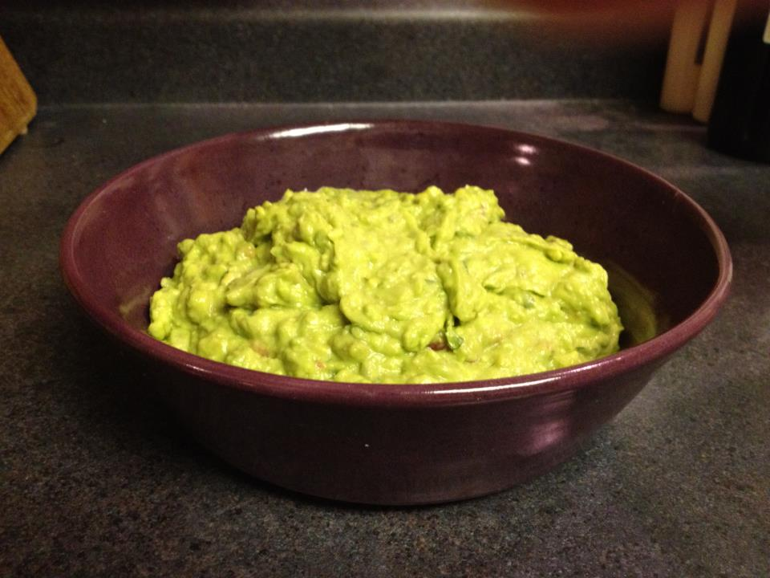

For nearly ten years, my family and I have spent the 4th of July holiday at CJ's Lakeview Resort in Haugen, WI. CJ's is owed by friends of my wife's family, who were neighbors when she was young. It is located on the south eastern banks of Bear Lake, a large, beautiful, and surprisingly uninhabited body of water for this region. It features 4 main cabins with "some" of the comforts of home, but built mostly to accommodate visitors between being in or out on the lake - fishing, swimming, boating, skiing, whatever you can do in the water.
The cabins are named for local states -- the Ohio, Illinois, Indiana, and the Wisconsin, which recently was re-opened after years of being out of service. Now it is rented for the entire summer by a retired police chief from central Wisconsin who has been coming to this lake (and occassionally this resort) since he was a boy. My family stays exclusively in the Indiana.
I did not grow up in a family that did much camping, fishing, or boating, but I did like to do all those things as kid. Now that I have a family of my own, it has been fun to try some of these activities with my own kids, Olivia and Paige, to see what they enjoy the most.
Olivia, my eldest, is entering her sophomore year of high school, and tends to focus much of her time at the cabin playing in the water, catching some serious rays, and eating the way one does while on vacation. She'll even bring a book sometimes. She also likes photography, and there are plenty of photo ops in this place!
Paige, her younger sister, is 3 years younger, and LOVES fishing off the dock. She took to it almost immediately our first trip there, and just gets better and better each year. I will sit with here and fish as well, but usually she is pulling them in at a rate of about 5 to 1. compared to me. All catch and release of course, but you'd be surprised at the size of some of the fish we have caught just a few feet out!


From the kitchen
I love's me some Guacamole! And over the past few year's we have almost perfected a recipe given to us by one of my wife's friends, Gretal. We fudge it every now and again when we are out of one of the ingredients, but aside from occaionally using too much salt, it is really hard to mess up. And even when we do, it is hard to resist!
Our basic ingredients list looks like this:

1 jalepeno pepper
2-3 Ripe Avacados
1 tomato
1/2 white or yellow onion (medium size...whatever that mean to you)
2-3 sprigs of cilantro
1 lime
1/2 tsp minced garlic
salt (I like sea salt, but whatever you have will work
light cooking spray
Here's how to put it all together:
Boil the jalepeno pepper in until it is soft, about 20 minutes. While it is boiling, slice the tomato about 1/4 inch thick slices, removing all seeds, and sear on a skillet sprayed with some light cooking spray. Be careful not to let them burn!
As those items finish cooking, set them aside to cool. Next cut open your avacados, remove the seeds, and scoop all of the meat into a good sized mixing bowl. Using a mortar/pestal, or even just a big spoon, start mashing the avacoda in to a paste
If you are using fresh onion, chop half (or more if you REALLY like onion) in to small pieces and add them to the avacado. Mix in lightly for now.
Juice half of your lime and add it, along with the salt, and chopped cilantro
Carefully cut open your cooled (but not cold) jalepeno and remove the stem and seeds. use a mortar/pestal (or again, a big spoon) to mash it into a paste, and add it to the mix.
Cut the tomato into small bits and add them as well, mixing more throughly now.
Using your favorite tortilla chips, taste test to see if needs more of something (salt, cilantro, lime, etc.). Everyone's tastes are different, so feel free to get a few opinions if you have family and friends around. When I find I have too much of something, I will usually start by adding more avacado -- we tend to keep a few extras on hand!